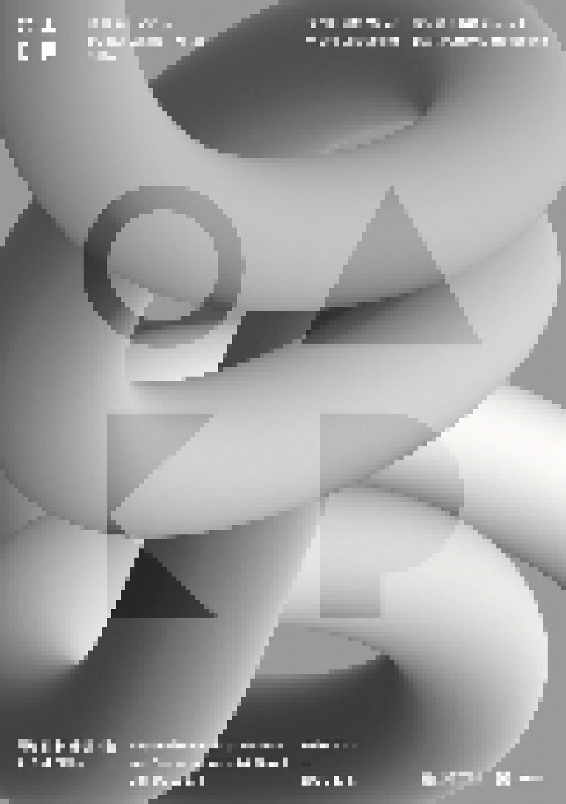

> title
올해의 작가상 2020
> content
올해의 작가상은 2012년부터 국립현대미술관과 SBS문화재단이 공동으로 운영해 온 후원 프로그램이다. 동시대의 가장 첨예한 미학적, 사회적 이슈들을 다루는 역량있는 시각예술 작가를 대상으로
하며, 해마다 4명의 후원
작가를 선정하여 작품 제작을 위한 후원금과 전시 기회를 제공한다. 올해로 9회째에 이르기까지 올해의 작가상은 매해 많은 관심과 화제를 모으며 미술계에 새로운 담론과 방향성을 제시하는 역할을
해왔다.
《올해의 작가상 2020》은 지난 해 말에 큐레이터와 평론가 등 국내외 미술 전문가들의 추천과 심사를 거쳐 김민애, 이슬기, 정윤석, 정희승을 후원 작가로 선정했다. 조각과 설치를
통해 일상과 예술의 틀을 비트는
작품들을 발표해 온 김민애는 미술관의 전시 공간을 소재로 삼아 작품과 전시의 관습적 조건들에 의문을 제기하는 신작을 선보인다. 1990년대 초부터 프랑스를 기반으로 활동하면서 조형성이 강조된
조각과 설치, 영상 작품
등을 만들어 온 이슬기는 전통 건축과 민속의 요소들을 이용한 공간 설치로 전시장을 색다른 모습으로 바꾸어 놓는다. 김민애와 이슬기가 조형언어들을 적극적으로 활용하여 미술관의 공간을 새롭게 인식,
체험할 수 있는
공간을 제공한다면, 정윤석과 정희승은 인간과 삶에 대한 진지한 고찰의 시간을 제안한다. 영화 감독으로도 활동해 온 정윤석은 변화하는 시대에 특정한 선택을 하는 개인들의 이야기를 통해 우리 시대의
‘인간다움’에 대해
성찰하는 영상 설치 작품을 소개한다. 마지막으로 사진을 주된 매체로 작업을 지속해 온 정희승은 사진과 글, 음악이 혼합된 설치 작품으로 동료 예술가들과 함께 나눈 삶과 예술에 대한 고민들을
전시장에 펼쳐 놓는다.
프랑스를 기반으로 활동하고 있는 이슬기는 일상적인 사물과 언어, 자연의 근원적 형태에 대한 관심을 조형성이 강조된 조각이나 설치로 표현하는 작업을 지속해 왔다. 그는 특히 민속에서
소재를 얻어 공예 장인들과 함께
작업하는 방식을 즐겨 사용하는데, 통영의 누비 이불 장인, 멕시코의 전통 바구니 조합 장인들과의 협업 등이 대표적이다.
이번 전시에서 발표하는 작품 <동동다리거리>에서 작가는 한국의 전통 창호를 이용하여 미술관 전시실을 새로운 공간으로 탈바꿈한다. 과거의 전통 가옥에서 창호지를 바른 문살을 통과하여 방안에 마술적
공간을 만들었을 달은
아예 문의 일부가 되어 관람객을 맞이한다. 한편, 전시장 곳곳에는 코로나 19 상황으로 인해 각자가 사는 곳에서 격리되어
만나지 못하게 된 작가의 지인들이 보내온, 세계 각지의 강물이
담긴 유리 용기들이 걸려
있으며, 여기에 한국의 민요와 프랑스의 전통 놀이 등 유희적인 요소들이 곁들여진다. 건축가, 전통 문살 연구가, 유리 공예가와의 협업으로 이루어진 이 작업은 인간이 만들어 낸 물건들의
원초적이면서도 유희적인
형태, 그리고 그것을 드러나는 인간과 자연의 근원적이면서도 신비로운 관계에 대한 작가의 오랜 성찰을 반영한다.
김민애는 개인이 사회 속에서 경험하는 모순적 상황들을 조각을 통해 표현하거나 건축 공간에 개입하는 장소특정적 설치물을 통해 구조와 틀 자체를 비트는 작업을 발표해 왔다.
이러한 작업들은 특히 미술관이라는
물리적 공간이자 제도적 환경 속에서 미술의 성립조건에 대한 질문으로 이어졌다.
이번에 소개하는 신작 <1.안녕하세요 2. Hello>는 국립현대미술관 2전시실의 독특한 건축구조를 이용한 설치 작품으로 공간 속에서 상호 반응하며 연쇄 반응처럼 전개되는 조각과
구조물들로 이루어진다.
평상시에 지나치기 쉬운, 물리적으로 존재하지만 조형적으로는 인식되지 않는 ‘간과된’ 공간들이 전면에 드러나면서 작품의 역할을 하고, 이러한 공간들에 반응하여 형식적으로 대응되는
일련의 조각들이
더해진다. 이 과정에서 작가의 과거 전시에 등장했던 요소들이 소환되어, 일종의 역사적 레퍼런스로 작용하기도 한다. 서로 조응하거나 대치하는 조각들은 다분히 작위적인 설정을
드러내면서 우스꽝스러운 조각적
상황극을 연출한다. 공간과 구조물, 작품 사이의 경계가 허물어지는 상황은 조각이 주어진 환경이나 맥락과 떨어져 존재할 수 있는가라는 작가의 오랜 질문에서 발원하여, 나아가 조각이,
미술이 무엇인가라는
성찰로 연결된다.
정희승은 사진을 주된 매체로 삼아 대상을 이미지화하는 과정에서 드러나는 가능성과 한계들을 탐구하는 작업을 지속해 왔다. 그는 사물과 신체, 공간 등을 다루면서 매체의
즉물성을 극대화하는 한편, 텍스트를
활용하여 이미지와 언어라는 불완전한 소통 도구들 사이의 관계를 조명하기도 한다.
이번 전시에서 정희승은 예술가로 살아가는 일에 대한 고민을 동료 예술가들과의 소통을 통해, 혹은 소통의 과정 그 자체로서 전시장에 펼쳐 놓는다. 각각 사진과 텍스트를 주된 매체로
하는 <침몰하는 배 위에서 함께 추는 춤>과 <알콜중독자와 천사들을 위한 시>는 형식적으로는 두 개의 파트이지만 내용상으로는 서로 긴밀하게 연결되는 하나의 설치 작업이다. 작가가
24인의 인물과 나눈 시간과
이야기들은 그들의 모습을 담은 초상, 그들의 일상에서 추출한 사물이나 대상의 이미지, 그리고 이 작업을 하면서 나눈 대화의 파편들로 만들어진 짧은 문구들의 형태로
전환된다. 구체적이면서도
모호한 이미지와 언어의 조합에 음악이 더해진 공간 속에서 관객들은 예술가의 삶을 선택한 이들의 헌신과 두려움, 그리고 삶만큼이나 부조리하고 무상한 예술이라는 세계를
향한 발언들을 마주하게
된다.
시각예술작가이자 영화감독으로 활동하는 정윤석은 특정한 사회적 사건에 초점을 맞춰 그 이면을 파헤치는 이야기 속에서 개인의 삶과 국가 제도 사이의 관계, 그리고 인간의
양면성을 드러내는
다큐멘터리 영화를 제작해 왔다. 1990년대의 살인집단 지존파 사건을 다룬 <논픽션 다이어리>(2013)나 하드코어 인디 밴드를 소재로 한 <밤섬해적단 서울불바다>
(2016)가
대표적이다.
이번 전시에서 정윤석은 장편 영화 한 편과 사진 및 영상 설치로 구성된 작품 <내일>을 선보인다. 전시의 중심축을 이루는 영화 <내일>은
인간과 닮은 인간의 대체물들을
만들거나 소비, 혹은 이용하는 사람들이 등장하는 다큐멘터리이다. 영화의 전반부는 중국의 한 섹스돌 공장에서 이루어지는 노동 현장의 풍경에
초점을 맞추고,
후반부는 일본에서 인형과 함께 살아가는 인물 센지 나카지마, 그리고 인공지능 로봇을 정치적 대안으로 제시하는 인물 미치히토 마츠다의
이야기를 교차시킨다. 두
인물의 선택 모두 인간에 대한 실망과 불신에서 출발하지만, 문제를 타개하는 방식과 목적은 사뭇 대조적이다. 영화는 변화하는 시대 속에서
개인들이 선택하는 삶의
모습들을 통해 인간다움이란 무엇인가에 대한 질문을 던지면서 우리 시대의 기괴한 풍경과 미래의 징후들을 드러낸다.
